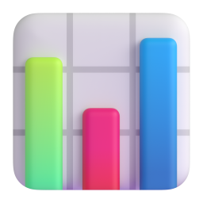

ELCAMPUS · NEW BUSINESS REVIEW
작성일 2026-10-23
화이트 라벨 업무 플랫폼 + 고객별 독립 보안 클라우드 + AI 연동 + 교육
종합 판정
검토한 사업의 진행은 보류
가격 수용성과 도구 전환·추가 구독 의향 확인 필요
한눈에 보기
起
개요
검토한 사업은 엘캠퍼스가 30~100인 중소기업에 화이트 라벨 업무 플랫폼, 독립 서버,
AI 연동, 교육을 묶어 월 구독으로 판매하는 사업이다
承
구성·비용·가격
개발자 4명과 UIX 2명이 시간의 절반씩 투입하면 출시까지 약 9개월이 걸린다. 출시 전 투자는
약 2억 5,700만 원이며, 그중 새로 나가는 현금은 PM 영입을 포함해 약 7,100만 원이다
轉
손익·위험
매달 신규 고객이 3곳이면 현금은 착수 후 2년 10개월에 회수하지만, 사내 인력의 기회비용까지
넣으면 7년 1개월이 걸린다(4곳이면 2년 4개월, 5년 2개월). 3곳·4곳은 아직 근거가 없는 가정이다
結
판정
검토한 사업의 진행은 보류다. 엘캠퍼스에는 투자 한도와 허용 회수 기간 기준도 아직 없다.
엘캠퍼스가 기존 고객 DB와 영업 채널로 2~3개월 동안 LOI(Letter of Intent, 구매의향서)를 받아 재판정한다
ARPU(Average Revenue Per User, 고객 1곳당 평균 월 매출) 80만 원, 고객 1곳당 월 변동비 29만 원, 월 고정비 약 3,220만 원(그중 현금 약 1,160만 원),
해지율 매달 2%(추정). PM(Product Manager, 제품·프로젝트 관리자). UIX(UI/UX 디자인). 사내 인력은 KOSA 2026 시장 인건비로 환산
起
분석 대상과 방법
起
개요
承
구성·비용·가격
轉
손익·위험
結
판정
사업 구상
起
承
轉
結
항목
구상 내용
대상 고객
자체 IT·보안 인력이 없는 30~100인 중소기업
상품
화이트 라벨 업무 플랫폼
일정·프로젝트 관리
독립 보안 클라우드(Silo)
고객별 서버·DB 분리
BYOK AI 연동
고객이 자기 AI 키 등록
교육
직무·법정의무, 생성형 AI 실무
운영
서버·네트워크·백업은 AWS 운영 대행사(MSP), 앱은 개발팀이 맡는다
가격
월 구독 Lite 45만 원, Pro 75~90만 원(주력), Enterprise 250만 원 이상. 엘캠퍼스 교육비와 별도
투자(초기 추정)
개발 5~6개월, 초기 투자 5,000~6,000만 원, 월 운영비 1,500~2,000만 원
영업
엘캠퍼스 기존 교육 고객 약 3,800곳의 교육 갱신 시점에 “교육비는 그대로, AI 교육 무상, 도입비 면제”로 제안
착수 조건
1. MSP와 인프라 방식 합의
2. 개발자 3명 시간 절반 이상 보장
3. 5~6개월에 끝낼 범위 확정
BYOK(Bring Your Own Key): 고객이 자기 AI 키를 등록하고 AI 사용료를 AI 회사에 직접 지불. MSP(Managed Service Provider): 클라우드 운영 대행사
검토 방법
起
承
轉
結
01
구성요소 정의
서비스를 이루는
구성요소 6개
02
요건과 비용
판매 가능한 최소 기능의
개발 기간과 금액
03
상품과 가격
요금제별 구성과
원가 기준 가격 하한
04
손익
연도별 손익과
흑자 전환·투자 회수
05
판정
결정 기준 권고와
다섯 영역 판정
타당성 검토 자료는 출처가 있는 숫자와 추정한 숫자를 구분해 표기했다. 사내 인력은 한국소프트웨어산업협회(KOSA) 2026년
SW기술자 평균임금(응용SW개발자 월 775만 원, UI/UX디자이너 월 516만 원)으로 환산했고, 비용과 손익은
사내 인력(기회비용)을 포함한 기준과 새로 나가는 현금만 넣은 기준으로 나눠 보였다.
承
무엇으로 이루어지고,
얼마가 들고, 얼마에 파는가
起
개요
承
구성·비용·가격
轉
손익·위험
結
판정
구성요소
起
承
轉
結
A
고객에게 보임
업무 플랫폼
TASK·프로젝트 관리, 화이트 라벨
B
고객에게 보임
독립 보안 클라우드
고객별 서버·DB·백업, 인프라 통제
C
고객에게 보임
AI 연동
BYOK, AI 생성물 표시
D
고객에게 보임
교육
LMS 연동, 생성형 AI 실무 교육
E
고객에게 안 보임
고객 관리·운영 체계
운영 콘솔, 일괄 업데이트·롤백,
모니터링, 청구
F
고객에게 보임
온보딩·고객 지원
도입 설정·데이터 이전, 정기 지원
A~F 여섯 구성요소 외에 공통 항목(화면 디자인, 테스트, 법률 검토, 외부 보안 점검, 보험)이 더해진다. LMS(Learning Management System): 학습 관리 시스템
고객 가치 제안
起
承
轉
結
업무 도구 + AI
회사에 맞춘 AI 기능
일정·프로젝트 관리를 업무의 기본 틀로 쓰고, 고객사가 직접 구독한 AI(BYOK)를 그 틀에 연결해 회사마다 필요한 기능을 더하거나 맞춤화한다
업무 화면 안에서 바로 쓰는 AI 기능의 예
회의록 요약, 주간 보고 초안,
TASK 분류
교육
AI 활용이 몸에 밴 조직
엘캠퍼스가 활용 방법을 교육으로 가르친다. 직원은 매일 쓰는 업무 도구 안에서 업무 효율화를 위해 AI를 쓰며 자연스럽게 익숙해진다
업무 도구·AI·교육이 이어지면 갖춰지는 것
AX(AI Transformation,
AI 기반 업무 전환) 환경
도입·운영 지원
손이 덜 가는 도입과 운영
표준 온보딩에서 화이트 라벨 설정, 고객 전용 서버 개설, AI 키 연동을 엘캠퍼스가 대신 해 주고, Pro 이상 고객은 월 정기 기술 지원을 받는다
업무 데이터 보관
고객사별 전용 서버에 따로 보관,
다른 회사의 데이터와 섞이지 않음
가설
이 가치 제안이 실제 구매로 이어지는지는 기존 교육 고객 대상 시장 검증(LOI)으로 확인한다
BYOK(Bring Your Own Key): 고객이 자기 AI 키를 등록하고 AI 사용료를 AI 회사에 직접 지불
강점과 약점
起
承
轉
結
영역
강점(확인된 자산)
짝을 이루는 약점(이 사업에 쓸 때의 제약)
고객 기반
기존 교육 고객 약 3,800곳과 매년 돌아오는
교육 갱신 접점이 있다
교육을 맡는 인사·총무 담당자와 업무 도구를 결재하는
대표가 달라, 교육 관계가 곧 구매 경로가 되지는 않는다
교육 역량
평생교육시설로서 직무·법정의무교육 콘텐츠와
LMS, 교육 운영 경험을 갖추고 있다
생성형 AI 실무 교육 콘텐츠는 새로 만들어야 하고(500~4,000만 원),
정부 지원으로 거의 무료인 AI 교육과 경쟁한다
영업 채널
교육 영업 담당이 고객사와 직접 만나는
영업 채널이 있다
소프트웨어 구독(SaaS)을 팔고 해지를 관리해 본 경험은 없다
플랫폼 개발·운영
사내 업무 플랫폼을 직접 개발해 실제 업무
(요청 → 처리 → 결과물 → 검수)에 운영하고 있다
비개발자가 게시판 대체용으로 시작해 권한 관리, 입력 검증,
비밀값 보호, 여러 회사를 나눠 담는 구조가 없다
개발 인력
개발자 4명과 UIX 인력 4명을 사내에 두고 있다
개발자가 LMS 유지보수와 겸직하고, 인프라·여러 고객 동시 운영
경험이 부족하며, PM·PO·기획을 맡을 사람이 없다
PO(Product Owner): 제품 책임자 · SaaS: 인터넷으로 빌려 쓰는 소프트웨어
플랫폼 개발·운영의 약점은 기획 책임자와 함께 사내 플랫폼 화면을 직접 점검해(2026-10-23) 확인
업무 플랫폼의 범위
起
承
轉
結
기능
현재 사내 플랫폼
MVP 범위(제안)
MVP 범위에서 제외
TASK 구조
TASK·WBS·QA가 분리돼 있음
TASK 하나로 통일, 하위 TASK, 단순 의존성
일정 자동 이동
뷰
게시판형 리스트
리스트·칸반·캘린더·간트
워크로드, 포트폴리오
권한
권한 관리 화면 없음
관리자·멤버·게스트, 공개·비공개
필드 단위 권한
맞춤
없음
템플릿, 엑셀 가져오기
자동화, 커스텀 필드
개발 기간
–
신규 개발 시 13주(약 3개월)
–
MVP 범위의 비교 기준: 먼데이 Standard·아사나 Starter(Lite 45만 원을 30명이 쓰면 1명당 월 1.5만 원으로 같은 가격대)
MVP: Minimum Viable Product · WBS(Work Breakdown Structure): 작업 분류 체계 · QA(Quality Assurance): 품질 검수 · 칸반·간트: 카드판·일정 막대 화면
사내 플랫폼에서 출발하는 방법
起
承
轉
結
가. 사내 플랫폼 모듈 재활용(발췌·경량화)
나. 신규 개발(기본 계산)
내용
일정·프로젝트 관리 모듈을 발췌해 외부 고객용으로 수정
최소 기능 범위에 맞춰 데이터 구조부터 새로 개발
장점
현재 쓰는 화면과 업무 흐름(요청 → 처리 → 검수) 활용
권한·입력 검증·회사별 구조를 처음부터 반영
업무 기능 개발
0~3개월(0~2,330만 원), 재사용 범위는 코드 진단 후 확정
약 3개월
출시 전 투자
(사내 인력 포함)
약 2억 2,100만~2억 5,700만 원(재사용 100%~0%)
약 2억 5,700만 원
출시까지
2.0명분 약 7.5~9개월
2.0명분 약 9개월
착수 후 투자 회수
(매달 3곳)
재사용 100%면 사내 인력 포함 6년 10개월,
현금 기준 2년 8개월
사내 인력 포함 7년 1개월,
현금 기준 2년 10개월
두 방식 모두 칸반·캘린더·간트 등 없는 뷰와 권한·입력 검증 같은 기반 결함은 보완해야 한다
2.0명분: 개발자 4명이 시간의 절반씩 투입. 재사용 범위는 개발팀의 코드 진단으로 확인
개발 기간
起
承
轉
結
출시까지 걸리는 기간
초기 추정
구상 단계(3명이 이 일에만 매달릴 때)
5~6개월
2.0명분 투입(기준)
개발자 4명이 시간의 절반씩
약 9개월
겸직 전환 비용 반영
두 일을 함께 하면 시간의 약 20% 손실
약 11개월
1.5명분 투입
구상의 투입 조건, 개발자 3명
약 1년
2.0명분 + AI 코딩 도구
연구 결과로 단축률 추정
약 7개월
최소 요건 개발량의 내역 · 1명 기준 약 1년 6개월분(그중 개발자 몫 약 1년 4개월분)
8.25개월분
3.75개월분
3개월분
2.75개월분
업무 플랫폼(A)
업무 기능, 계정·권한, 화이트 라벨, 관리자 화면, 모바일
나머지(B·C·D)
고객 환경 자동 생성, 인프라 통제, AI 키, LMS 연동
공통
화면 디자인, 테스트
고객 관리·운영 체계(E)
운영 콘솔, 일괄 업데이트·롤백, DB 변경 자동화
추정. UIX 몫을 뺀 개발자 몫(약 1년 4개월분)을 2.0명분으로 나누면 약 8개월, 겸직 조율 시간을 더해 약 9개월. 전환 비용 20%는 Weinberg의 경험칙
조직과 인력
起
承
轉
結
역할
최소 인원(출시 전~고객 약 30곳)
권장 인원(고객 30곳 이상)
PM(기획·PM·PO 겸임)
신규 1명 전담
1명 유지
개발
사내 4명 × 50%(2.0명분)
2.0명분, 기준 요건 개발이 밀리면 1명 추가 채용 또는 외주
디자인(UIX)
사내 2명 × 50%(1.0명분)
같음
인프라·보안 운영
MSP(외부) + 개발자 1명을 담당자로 지정
같음. 고객이 늘면 야간 장애 대응 계약 보강
영업
교육 영업 담당이 겸직
이 상품 판매 목표를 따로 둔 담당 1명
고객 지원·온보딩
지원 담당 1명 채용(출시 직후)
30~60곳당 1명
PM의 일
서비스 유지·개편 항목과 고객 요청을 백로그로 모아 회의 안건(아젠다)과 TASK로 만들고, 우선순위를 정해 실행되게 한다
AI의 역할
사람과 소통·합의가 필요해 AI가 대신할 수 없다. AI는 문서 업무 시간 약 40%, 자료 수집·요약 시간 약 15%를 줄이는 보조 도구다(McKinsey 2024)
PM 비용
주니어(1~3년차) 월 약 320~400만 원, 손익에는 월 360만 원. 경력자(5~7년차) 월 약 430~520만 원. 새로 나가는 현금이다
PM(Product Manager): 제품·프로젝트 관리자 · PO(Product Owner): 제품 책임자. 사내 개발자·UIX 투입은 출시 전·후 모두 적용.
PM 인건비는 회사 부담 총액(연봉 × 1.2~1.25배, 그룹바이 2025 연봉 자료 기준, 추정)
투자와 운영비
起
承
轉
結
출시 전 투자(CAPEX)
약 2억 5,700만 원
사내 인력 약 1억 8,600만 원(개발 1억 3,950만, 디자인 4,640만)
현금 약 7,100만
현금 내역: PM 9개월 3,240만, AI 교육 콘텐츠 2,000만, 보안 점검 550만, 설계 전문가 530만, MSP 구축 500만, 법률 300만
월 고정비(OPEX)
약 3,220만 원
사내 인력 2,066만 원(개발 1,550만, 디자인 516만)
현금 약 1,160만
현금 내역: PM 360만, 마케팅 325만, AWS 150만, MSP 150만, 야간·주말 장애 대응 100만, 운영 도구·PC·보험 73만
고객 1곳당 월 변동비(OPEX)
29만 원
현금 29만 원 (모두 새로 나가는 돈)
내역: 고객 지원 12만(지원 담당 신규 채용), 전용 서버·DB 10만, MSP 4만, 보안 3만. 별도로 신규 1곳당 온보딩 65만 원(1회)
CAPEX(Capital Expenditure): 출시 전 투자비 · OPEX(Operating Expenditure): 운영비. 중간값 기준. 사내 인력(기회비용): 이미 급여를 주는 인력의 시간을
KOSA 2026 시장 인건비로 환산한 값으로, 그 시간에 하던 일(LMS 유지보수 등)을 못 하는 대가. 현금: 회사 밖으로 나가거나 새로 채용해 지급하는 돈
상품 구성
起
承
轉
結
구성요소
Lite
Pro(주력)
Enterprise
대상·가격
30인 이하 · 월 45만 원
50인 이하 · 월 75~90만 원
100인 이상 · 월 250만 원 이상
업무 플랫폼
기본 프로젝트 관리(화이트 라벨)
같음
같음
독립 보안 클라우드
고객별 서버·DB
같음 + MSP 보안 관제
물리적으로 분리된 전용 서버(네트워크까지 분리)
AI 연동
기본 AI 기능(BYOK)
같음
같음
교육
미정
생성형 AI 실무 교육 무한 열람
같음
고객 지원
미정
월 정기 기술 지원
전담 기술 지원
일회성 상품
표준 온보딩 100만 원(연간 계약 시 면제)
같음
맞춤 구축 500~1,000만 원
미정
· Lite의 지원·교육 범위
· Pro의 정기 지원 횟수와 75만/90만 원 구분 기준
· Enterprise “전담”의 정의
· 온보딩의 데이터 이전 포함 여부
가격 근거
起
承
轉
結
변동비
고객이 한 곳 늘 때마다 매달 늘어나는 비용. 전용 서버·DB, 보안, MSP 관리비, 고객 지원으로 1곳당 월 19만~41만 원
공헌이익
월 구독료(매출)에서 그 고객의 변동비를 뺀 돈(Contribution Margin).
이 돈으로 월 고정비 약 3,220만 원(그중 현금 약 1,160만 원)을 갚고, 넘는 만큼이 영업이익이 된다
공헌이익률
구독료 중 공헌이익의 비율. 예: 월 72만 원을 받으면 29만 원은 변동비, 43만 원이 남아 약 60%
고객 1곳에서 구독료의 60%를 남기려면 받아야 할 월 구독료
Lite 45만
Pro 75~90만
변동비 19만 원
48만 원
변동비 29만 원(중간)
73만 원
변동비 41만 원
103만 원
영업이익이 0이 되는 평균 구독료
고객 수
사내 인력 포함
현금 기준
40곳
115만 원
63만 원
60곳
86만 원
52만 원
80곳
72만 원
46만 원
100곳
63만 원
43만 원
60%는 비교용 값. 구상 단계 가정 70%는 업계 자료와 맞는다: B2B SaaS 매출총이익률 중앙값 77%(Benchmarkit 2025), 비상장 SaaS 약 74%(SaaS Capital 2026).
영업이익 0의 평균 구독료 = 변동비 29만 원 + (월 고정비 + 월 온보딩비 약 195만 원) ÷ 고객 수. 회사 전체 기준
평균 구독료 가정
起
承
轉
結
Lite
Pro
Enterprise
비중(%)
ARPU
착수 후 회수, 사내 인력 포함
(매달 3곳 / 4곳)
착수 후 회수, 현금 기준
(매달 3곳 / 4곳)
10 / 83 / 7
약 90만 원
5년 8개월 / 4년 4개월
2년 6개월 / 2년 1개월
20 / 77 / 3(기본)
약 80만 원
7년 1개월 / 5년 2개월
2년 10개월 / 2년 4개월
47 / 53 / 0
약 65만 원
못 함 / 7년 10개월
3년 8개월 / 3년
100 / 0 / 0
45만 원
못 함 / 못 함
9년 7개월 / 6년 9개월
Lite 고객 비중이 절반 가까이로 늘어 ARPU가 65만 원 수준으로 내려가면, 사내 인력 포함 기준으로
매달 3곳은 출시 후 10년 안에 투자를 회수하지 못한다. Pro가 75만 원과 90만 원 중 어느 쪽으로 팔리는지에 따라서도
ARPU가 달라지므로, Pro 가격을 가르는 기준을 먼저 정해야 한다
추정. ARPU는 Pro 82.5만 원(75~90만 원의 중간값), Lite 45만 원, Enterprise 250만 원으로 계산. 다른 조건은 손익 기본 조건과 같다.
못 함: 출시 후 10년 안에 투자를 회수하지 못함
직원 1명당 가격
起
承
轉
結
구분
상품
직원 1명당 월 가격
AI 사용료 포함 시(추정)
이 상품
Pro 75~90만 원을 30~50인이 쓸 때
1.5~3.0만 원
1.8~4.3만 원
Lite 45만 원을 20~30인이 쓸 때
1.5~2.25만 원
1.8~3.6만 원
직접 경쟁
플로우 Standard / Pro
약 1.4만 / 2.2만 원
AI 기능 제공(포함 범위·추가 요금 확인 안 됨)
네이버웍스
공개 요금 미확인
AI 기능 제공(포함 범위·추가 요금 확인 안 됨)
하이웍스(그룹웨어)
약 0.4만 원
AI 기능 포함 여부 확인 안 됨
Google Workspace
약 2.0만 원
약 2.0만 원(Gemini AI 포함)
부분 대체
ChatGPT Business
약 2.8만 원
약 2.8만 원(AI 기능 포함)
M365 Copilot Business
약 2.5~2.9만 원 + 오피스 라이선스
같음(AI 기능 포함)
AI 거버넌스 솔루션(세이프엑스 등)
비공개
비공개(AI 사용료 별도)
직접 경쟁: 이 상품 대신 쓸 수 있는 업무·협업 도구(그룹웨어 포함). 부분 대체: AI 기능만 대신하는 상품. 이 상품은 BYOK라 고객이 AI 사용료를 따로 낸다.
AI 사용료는 50인 기준 1명당 월 약 0.3~1.3만 원(추정). 경쟁 상품 가격은 각 사 공개 요금
轉
사내 인력의 기회비용과
신규 고객 수가 손익을 가른다

起
개요
承
구성·비용·가격
轉
손익·위험
結
판정
연도별 손익
起
承
轉
結
매달 3곳, 출시 후 누적 손익 (출시 전 투자 포함)
사내 인력 포함
● 출시 후 6년 4개월 회수
현금 기준
● 출시 후 2년 1개월 회수
+20억
+10억
0
−5억
출시
1년
2년
3년
4년
5년
6년
7년
최대 −6.92억
1년차
2년차
3년차
4년차
5년차
연말 고객
32곳
58곳
78곳
93곳
105곳
매출
1.74억
4.47억
6.61억
8.28억
9.60억
사내 인력 포함
연간 손익
−2.99억
−1.25억
+0.11억
+1.18억
+2.02억
누적 손익
−5.56억
−6.82억
−6.71억
−5.53억
−3.51억
현금 기준
연간 손익
−0.51억
+1.22억
+2.59억
+3.66억
+4.50억
누적 손익
−1.22억
0.00억
+2.59억
+6.24억
+10.74억
사내 인력 포함: 사내 개발·디자인 인력의 시간을 시장 인건비로 환산해 넣은 기준(경제적 타당성). 현금 기준: 새로 나가는 돈만 넣은 기준(마련할 자금).
1년차는 출시 후 첫 1년, 착수 후 기간 = 출시 후 기간 + 개발 9개월. ARPU 80만 원, 변동비 29만 원, 해지율 매달 2%(추정)
두 기준의 손익 결과
起
承
轉
結
매달 3곳(기준)
매달 4곳
사내 인력 포함
현금 기준
사내 인력 포함
현금 기준
월 흑자 전환(출시 후)
2년 6개월 · 68곳
10개월 · 27곳
1년 9개월 · 69곳
8개월 · 30곳
투자 회수(출시 후)
6년 4개월
2년 1개월
4년 5개월
1년 7개월
투자 회수(착수 후)
7년 1개월
2년 10개월
5년 2개월
2년 4개월
최대 누적 적자
6.92억 원
1.28억 원
5.75억 원
1.16억 원
3년차 영업이익률 10%에
필요한 ARPU
87만 원
54만 원
74만 원
49만 원
착수 후 4년 회수에
필요한 ARPU
115만 원
61만 원
95만 원
54만 원
두 기준의 차이는 사내 인력의 기회비용(출시 전 약 1억 8,600만 원, 출시 후 연 약 2억 4,800만 원). 빨간 값은 Pro 최고가 90만 원을 넘는 ARPU.
기본 조건: ARPU 80만 원, 변동비 29만 원, 해지율 매달 2%, 온보딩 1곳당 65만 원, 개발 9개월(추정)
손익 계산기
起
承
轉
結
계산식은 문서 5.6과 같다. 사내 인력 포함 기준의 사내 인건비는 KOSA 2026 시장 인건비가 기본값이며, 실제 급여가 확인되면 바꿔 넣는다
민감도 분석
起
承
轉
結
구분
하나만 바꾼 조건(매달 3곳)
사내 인력 포함 · 기본 7년 1개월
현금 기준 · 기본 2년 10개월
시장·가격
ARPU 65만 원(Lite가 많을 때)
10년 안에 못 함
3년 8개월
매달 신규 2곳
10년 안에 못 함
3년 9개월
고객 1곳당 변동비 41만 원
10년 7개월
3년 5개월
해지율 매달 3%
9년 11개월
2년 11개월
해지율 매달 1%
5년 9개월
2년 8개월
변동비 19만 원 또는 ARPU 90만 원
5년 8개월
2년 6개월
비용·개발
PM을 경력자로 영입(월 475만 원)
7년 5개월
3년
개발 기간 11개월(겸직 전환 비용)
7년 5개월
3년
AI 코딩 도구 사용(개발 7개월)
6년 11개월
2년 8개월
사내 플랫폼 재사용 100%(개발 7.5개월)
6년 10개월
2년 8개월
사내 인력
출시 1년 뒤 사내 투입 월 1,100만 원으로 축소
5년 6개월
2년 10개월
사내 인건비로 환산(월 1,250만 원)
5년 1개월
2년 10개월
착수 후 투자 회수 시점. 세로선은 기본 조건(ARPU 80만 원, 변동비 29만 원, 매달 신규 3곳, 해지율 매달 2%). 초록은 기본보다 빨라짐, 빨강은 늦어짐.
막대 길이는 착수 후 0~11년 눈금. 계산은 출시 후 10년까지(추정)
필요 ARPU
起
承
轉
結
읽는 법
각 칸은 사내 인력 포함(시장 인건비) / 사내 인력 포함(사내 인건비 월 1,250만 원) / 현금 기준의 필요 ARPU(만 원). 빨간 값은 Pro 최고가 90만 원 초과
출시 후 3년차 영업이익률 목표별
매달 신규
0%(손익분기)
10%
20%
2곳
102 / 84 / 57
113 / 94 / 63
128 / 105 / 71
3곳
79 / 67 / 49
87 / 74 / 54
98 / 84 / 61
4곳
67 / 58 / 44
74 / 65 / 49
84 / 73 / 56
착수 후 회수 기간별
매달 신규
3년
4년
5년
2곳
211 / 165 / 94
156 / 125 / 76
130 / 105 / 66
3곳
152 / 121 / 74
115 / 94 / 61
97 / 81 / 55
4곳
123 / 100 / 64
95 / 79 / 54
81 / 69 / 49
10%: 흑자 상장 SaaS 영업이익률 중앙값 11%(Blossom Street, 2024년 데이터), 대형 상장 SaaS 잉여현금흐름 마진 중앙값 10%(McKinsey, 2021).
20%: 더존비즈온 2024년 영업이익률 약 21.9%. 계산은 기본 조건에서 ARPU만 바꿔 역산
매달 신규 고객 수
起
承
轉
結
전제
엘캠퍼스가 기존 교육 고객에게만, 교육 갱신 시점에 이 상품을 판매한다. 외부 신규 영업은 반영하지 않았다
엘캠퍼스 기존 교육 고객
약 3,800곳
회사 자료
→
그중 30~100인 기업
760~1,520곳
20~40%로 가정
(규모 분포 자료 없음)
→
한 달에 교육 갱신 시점이 오는 곳
63~127곳
갱신이 1년 내내
고르게 온다고 가정
→
그중 사야 하는 비율(전환율)
2.4~4.8%
매달 3곳
3.1~6.3%
매달 4곳
3년 동안 쌓이는 신규 고객(매달 3곳)
108곳
30~100인 대상 기업의 7~14%
해지율 2%이면 고객 수는 최대 약 150곳(대상 기업의 10~20%)에서 멈춘다
주의
근거가 확인되지 않은 값
판단할 공개 사례를 찾지 못했다(B2B SaaS 전환율 1~5%는 1차 출처 없음).
LOI 응답률이 첫 검증 자료가 된다
시장
起
承
轉
結
주요 찬성 근거
수요
52.7%
중소기업 근로자 AI 활용률
70.4%
생성형 AI 도입 로드맵이 없는 중소기업
53.3%
AI 도입 시 보안·유출 우려
주요 반대 근거
가격 수용성
49.1%
정보보호 애로 1위: 예산 확보
3.6~3.8배
고객의 연간 지출(기존 교육비 대비, 추정)
90% 이상
정부 AI 융합훈련의 훈련비 지원
1.8~3.1만 원
AI 사용료를 더한 직원 1명당 가격(Pro 50인). Google Workspace(약 2.0만 원)보다 높다
찾지 못함
이 상품에 월 75~90만 원을 낸 국내 사례
찬반 혼재
국산 협업 SaaS의 손익: 잔디는 서비스 9년 만에 첫 월 흑자(2024.1), 플로우는 2025년 흑자 전환. 흑자는 가능하지만 9~10년이 걸렸다
협업 도구를 쓰지 않는 직장인 47.4%: 처음 들이는 수요는 남아 있지만, 무료 대안(카카오톡)으로 일하는 경우가 많다
출처: 대한상의 SGI(2026.6), 메가존클라우드·파운드리(2025.8), 과기정통부·KISIA 정보보호 실태조사(2025), 고용노동부(2026.1), 바이라인네트워크(2024.5), 트위그(2026.1), 오픈서베이(2021.4). 3.6~3.8배는 추정
실행 위험
起
承
轉
結
위험
내용
수준
개발자 겸직
4명이 LMS 유지보수와 병행하며 시간의 50%를 쓴다. 신사업이 밀리거나 LMS 품질이 떨어질
가능성이 크고, 겸직 전환 비용으로 실효 투입이 약 1.6명분으로 줄 수 있다
높음
PM 부재
PM·PO·기획 직무가 없다. PM 1명 영입을 손익에 반영했지만,
기획·PM·PO를 모두 할 수 있는 사람을 주니어 연봉으로 구하기는 어렵다
높음
인프라 경험 부족
MSP가 서버를 맡아도 일괄 업데이트·DB 변경·앱 장애 대응은 개발팀 몫이다
중간~높음
고객 지원·교육 운영 인력
Pro의 “월 정기 기술 지원”과 “AI 교육”을 담당할 인력이 초기 추정 운영비에 없어,
이 분석에서는 지원 담당자를 변동비에 반영했다
중간
경영진 기대 차이
경영진(대표이사)은 “사내 플랫폼을 그대로 다른 회사에 제공”하기를 기대하지만,
재활용이든 신규 개발이든 외부 고객용 개발이 필요하다
중간
수준(추정): 높음은 대응하지 않으면 출시가 3개월 이상 늦어지거나 출시 품질에 문제가 생길 가능성이 큰 위험, 중간은 일정·비용에 영향을 주지만 대응 방법이 있는 위험
기존 교육 매출 영향
起
承
轉
結
위험 1
카니발리제이션(Cannibalization, 매출 잠식)
구상한 영업 방식은 “교육비는 그대로, AI 교육 무상, 도입비 면제”다.
엘캠퍼스가 생성형 AI 교육을 유료 과정으로 팔고 있거나 팔 계획이라면,
AI 교육을 무상으로 받는 Pro 고객에게서는 그 매출이 사라진다
규모
금액 미산정
엘캠퍼스의 현재 AI 교육 매출과 판매 계획을 사내 자료로 확인해야 한다
위험 2
교육 계약 연동
교육 갱신과 이 상품을 한 번에 제안하면, 이 상품에 불만이 생긴
고객이 교육 계약까지 재검토할 수 있다
위험에 노출되는 교육 매출(고객 1곳 연 150~500만 원)
누적 신규 108곳(해지 고객 포함)
연 약 1.6~5.4억 원
3년차 말 이용 고객 78곳
연 약 1.2~3.9억 원
0억
2억
4억
6억
8억
대응
교육 계약과 이 상품 계약의 해지 조건을 따로 두고, LOI 검증 단계부터 교육 계약 조건과 분리해 제안한다
추정. 매달 3곳 3년 기준, 교육 매출은 직원 1명당 연 5만 원(구상 단계 가정). 매달 4곳이면 각각 연 약 2.2~7.2억 원, 1.5~5.2억 원.
위험 2의 금액은 손실액이 아니라 위험에 노출되는 교육 매출 규모. 손익 계산에는 두 위험 모두 반영하지 않았다
結
검토한 사업의 진행은 보류,
재판정에 필요한 확인 사항
起
개요
承
구성·비용·가격
轉
손익·위험
結
판정
결정 기준 권고
起
承
轉
結
첫째
투자 한도
운영비 3~6개월분의 현금을 남긴 뒤, 사업이 실패해 투자금을 모두 잃어도 본업에 지장이 없는 금액으로 정한다(QuickBooks 2026)
비교할 값: 최대 누적 적자(매달 3곳)
현금 기준 약 1.3억 원
사내 인력 포함 약 6.9억 원
둘째
허용 회수 기간
미국 CFO(최고재무책임자)의 56.7%가 회수 기간을 (거의) 항상 쓰고, 기준은 주로 2~4년이다(Graham·Harvey 2001, Dobbs)
다만 일반 투자 관행이므로
이 사업의 기준은
경영진이 직접 정한다
셋째
사내 인력 기회비용의 포함 여부
같은 조건에서도 판단에 사내 인력의 기회비용을 넣는지에 따라 회수 기간이 크게 달라진다
착수 후 회수(매달 3곳)
현금 기준 2년 10개월
사내 인력 포함 7년 1개월
집행 방식
투자 한도는 한 번에 쓰지 않고 시장 검증 → 개발 → 출시 → 확장의 관문마다 나눠 집행한다
근거: 관문 방식 Stage-Gate(Cooper 1990), 가정을 검증하며 나눠 집행하는 Discovery-Driven Planning(McGrath·MacMillan 1995),
감당 가능한 손실(Sarasvathy 2006), 신사업 기대치를 미리 정하고 예산을 분리한 기업 조사(McKinsey 2021)
착수 조건
起
承
轉
結
조건 1
미충족
인프라 방식 합의
MSP 견적과 협의를 아직 받지 않았다.
고객별·공용 AWS 계정 방식도 정하지 않았다
충족하려면
MSP 2~3곳 견적과 계정 방식 결정
조건 2
확인 안 됨
개발 시간 보장
개발자 4명과 UIX 2명이 시간의 절반씩
투입한다고 가정했다(개발 2.0명분, 출시까지
약 9개월). 경영진의 공식 보장은 확인하지 못했다
충족하려면
개발자·UIX 시간 보장에 대한 경영진 합의
조건 3
미충족
범위 통제(5~6개월)
최소 요건을 2.0명분으로 개발하면 약 9개월,
AI 코딩 도구를 쓰면 약 7개월 걸린다.
5~6개월에 맞는 범위는 정하지 않았다
충족하려면
5~6개월에 맞는 개발 범위 확정
영역별 판정
起
承
轉
結
영역
가능
조건부
보류
부적합
근거와 조건
시장
보류
대상 기업이 업무 도구를 이 상품으로 바꾸거나 추가로 구독할 근거보다 반대 근거가 많다.
지불 의향 자료는 엘캠퍼스가 기존 고객 DB와 영업 채널로 직접 확보할 수 있다
기술·운영
조건부
고객별 독립 서버와 MSP 운영 방식은 초기 고객 규모에서 운영할 수 있다. 출시까지 약 9개월
(최대 약 11개월)이 걸리고, 사내 코드 재사용 범위는 아직 진단하지 않았다
재무
조건부
매달 3곳이면 착수 후 회수가 현금 기준 2년 10개월, 사내 인력 포함 7년 1개월이다.
판정할 투자 한도·허용 회수 기간 기준이 없다. 경영진이 사내 인력 포함 착수 후 4년 회수를
요구하면 매달 4곳이어도 ARPU 약 95만 원이 필요해 부적합이 된다
법·규제
조건부
확인한 범위에서 막는 규정은 찾지 못했다.
부가통신 신고·손해배상 보험·ISMS 해당 여부를 확인해야 한다
조직
조건부
개발자 4명·UIX 2명의 시간 50% 투입 보장, PM 1명 영입,
고객 지원 담당 채용이 모두 확정되지 않았다
종합
보류
부적합이 없고 보류가 하나라도 있으면 종합은 보류
ISMS(Information Security Management System): 정보보호 관리체계 인증. 부가통신 신고: 인터넷 서비스 사업자가 하는 신고
종합 판정
結
엘캠퍼스는 개발에 앞서 가격 수용성과 도구 전환·추가 구독 의향을 확인해야 한다
부적합 영역은 없으며 기술·운영, 재무, 법·규제, 조직 영역은 조건부다.
다만 시장 영역의 핵심 가정 두 가지가 확인되지 않았다.
·
30~100인 기업이 월 75~90만 원(Pro 기준)을 내고 업무 도구를 이 상품으로 바꾸거나,
기존 도구에 더해 이 상품을 추가로 구독한다는 가정
·
매달 신규 고객이 3~4곳 들어온다는 가정
재무 결과는 사내 인력 포함 여부에 따라 착수 후 2년 10개월~7년 1개월로 달라지지만,
이를 판정할 투자 한도와 허용 회수 기간 기준이 아직 없다. 착수 조건 1~3도 충족되지 않았다.
엘캠퍼스는 기존 고객 DB와 영업 채널로 개발 없이 2~3개월 안에 LOI 검증을 마치도록 계획했다.
판정 변경 기준
起
承
轉
結
조건부로
아래가 모두 확인되면
1
월 75만 원 이상 조건의 LOI 10곳 이상,
또는 유료 선계약 5곳 이상
2
인터뷰 응답자의 절반 이상이 “지금 쓰는 업무 도구를
이 상품으로 바꾸겠다” 또는 “기존 도구에 더해
추가로 구독하겠다”고 답함
3
LOI 응답률로 추산한 신규 고객이 매달 3곳 이상
4
경영진이 투자 한도와 허용 회수 기간을 정하고,
다시 계산한 최대 누적 적자와 회수 기간이 그 안에 듦
여기에 착수 조건 1~3까지 충족되면 개발에 착수할 수 있다
부적합으로
아래 중 하나라도 확인되면
1
인터뷰 응답자의 70% 이상이 “AI 교육은 좋지만
업무 도구를 바꾸지도, 이 상품을 추가로 구독하지도
않겠다”고 답함 (시장 영역 부적합의 직접 근거)
2
신규 고객이 매달 2곳 수준에 그치거나, 받을 수 있는
평균 구독료가 월 65만 원 이하이면서 매달 3곳 이하
(출시 후 10년 안에 투자 회수 못 함)
3
경영진이 사내 인력 포함 기준 착수 후 4년 이내 회수를
요구함. 매달 4곳이어도 필요 ARPU 약 95만 원으로
Pro 최고가 90만 원을 넘어 재무 영역 부적합
70%는 이 분석에서 제안하는 기준이다
추가 구독도 매출이 되므로 조건부로 바뀔 길은 “바꾸겠다”와 “추가로 구독하겠다” 두 가지다
핵심 변수
起
承
轉
結
핵심 변수
확인 방법
기준선(현재 계산)
기준선에 못 미치면
ARPU
(요금제 비중)
기존 교육 고객 LOI.
월 75만 원 이상 조건 10곳 이상,
또는 유료 선계약 5곳 이상
80만 원
(3년차 손익분기 ARPU: 사내 인력 포함 약 79만 원)
65만 원이면 사내 인력 포함 매달 3곳은
출시 후 10년 안에 못 함(현금 3년 8개월)
매달 신규 고객 수
LOI 응답률, 30~100인 고객 수,
교육 갱신 일정
매달 3곳(사내 인력 포함 7년 1개월,
현금 2년 10개월)
2곳이면 사내 인력 포함 출시 후 10년 안에
못 함(현금 3년 9개월)
해지율
출시 후 실제 해지 기록
매달 2%
3%이면 사내 인력 포함 9년 11개월
고객당 변동비
MSP 2~3곳 견적,
지원 범위 확정
월 29만 원 이하
41만 원이면 사내 인력 포함 10년 7개월
(현금 3년 5개월)
개발 인력 투입
개발자·UIX의 실제 투입 시간
개발 2.0명분(출시까지 약 9개월)
실효 약 1.6명분이면 출시까지 약 11개월,
회수 4개월 늦어짐
회수 기간은 모두 착수 후, 매달 3곳 기준. 기준선은 현재 계산값이며, MSP 견적·교육 콘텐츠 제작비·LOI 결과가 확보되면 다시 계산한다
확인할 것
起
承
轉
結
확인 항목
확인 대상
영향을 받는 숫자
가격별 구매 의향, 업무 도구 전환·추가 구독 의향, 최소 기능 범위로 충분한지
기존 교육 고객(LOI·시연)
평균 구독료, 매달 신규, Lite 비중
신사업 투자 한도, 허용 회수 기간, 사내 인력 기회비용 포함 여부
경영진
재무 판정
기존 교육 고객 중 30~100인 기업 수와 갱신 시기
사내 고객 자료
매달 신규
개발자·UIX가 낼 수 있는 시간과 실제 급여, UIX 2명의 직무 범위
사내
개발 일정, 출시 전 투자, 고정비
PM 영입 조건(경력 수준, 연봉)과 영입 시점
경영진·인사
출시 전 투자, 고정비
고객별·공용 AWS 계정 방식의 구축비·월정액·고객별 관리비, 야간·주말 대응
MSP 2~3곳, 사내
출시 전 투자, 변동비, 고정비
사내 플랫폼 코드의 재사용 범위
개발팀
업무 기능 개발량
신규 AI 교육 콘텐츠 제작비, 현재 AI 교육 매출과 판매 계획
교육 사업부
출시 전 투자, 교육 매출 잠식
부가통신 신고·보험·ISMS 해당 여부, 위탁 계약·약관·SLA, 해지 조건 분리
법무
고정비, 출시 전 투자, 교육 매출 위험
강조한 첫 줄이 최우선 확인 사항. 이 밖에 배상책임보험 견적, 요금제별 미정 사항, 전국 30~99인 기업 수(KOSIS, 참고)를 확인한다.
SLA(Service Level Agreement): 서비스 수준 약정(장애 시 복구 시간 등)
시장 검증 계획
起
承
轉
結
3개월 안에 교육 갱신이 오는 30~100인 기업
약 190~380곳
→
연락
100곳
→
인터뷰
30곳
→
LOI 또는 유료 선계약
10곳 / 5곳
제안 가격
Pro는 대상을 둘로 나눠 월 75만 원과 90만 원을 각각 제시하고,
30인 이하에는 Lite 45만 원을 제시한다. 연간 계약 시 온보딩을 면제하며, AI 사용료가
1명당 월 약 0.3~1.3만 원(50인 기준) 따로 들고 출시는 착수 후 약 9개월 뒤라고 알린다
인터뷰 질문
지금 쓰는 업무·협업 도구와 비용, “바꾸겠다”·“추가로 구독하겠다”·“둘 다 아니다” 중 어느 쪽인지,
최소 기능 범위로 충분한지, 구매 결재권자가 누구인지
담당
교육 영업(연락·인터뷰·LOI 회수), PM(제안 설계·결과 정리, 영입 전이면 기획 책임자),
UIX(시연 화면), 경영진(가격 승인, 판정 재검토)
일정
1개월차 제안서·시연 화면·명단·질문 준비, 2개월차 연락·인터뷰,
3개월차 LOI 회수·결과 정리·판정 재검토
검증 비용(추정)
내부
약 2,150~2,280만 원
사내 인력 시간 환산, 새 지출 아님
외부
0~300만 원
인터뷰 사례 30곳 × 0~10만 원
곳 수와 비용은 이 분석에서 제안하는 값(추정)으로 경영진 승인 때 조정할 수 있다. 교육 갱신 상담과 함께 제안하더라도 교육 계약 조건과는 분리한다